Module 7 — ViewApp Namespaces | Lab 15
Pages 413–432
In this lab, you will create a sub-toolset under Training on the Graphics tab for storing ViewApp namespaces. You will create a custom ViewApp namespace named Sources and configure it in the ViewApp Namespace Editor. In the editor, you will add three ViewApp attributes, including one named URL1 for providing the URL for the WebBrowser App.
You will then create a symbol with two buttons and a text box. The buttons will be configured to display a homepage and a local HTML file in a running ViewApp. The text box can be used to navigate to other locations, such as other web sites. You will also create a new layout with the symbol in one pane and the WebBrowser App in another.
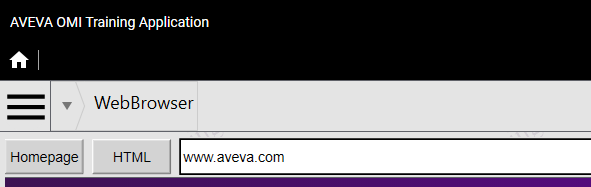
Step 1: On the Graphics tab, create a new graphic toolset under the Training toolset and name it ViewApp Namespaces.
URL1, HomeAddress, File_HTML) that store application-specific data within the ViewApp. These attributes can be referenced by animations, bound to App properties, and updated at runtime — providing a flexible way to share state between symbols and Apps.
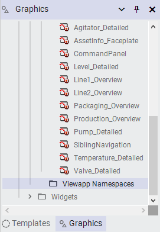
Step 2: Right-click the Training \ ViewApp Namespaces toolset and select New | ViewApp Namespace. A new ViewApp namespace with the default name is created.
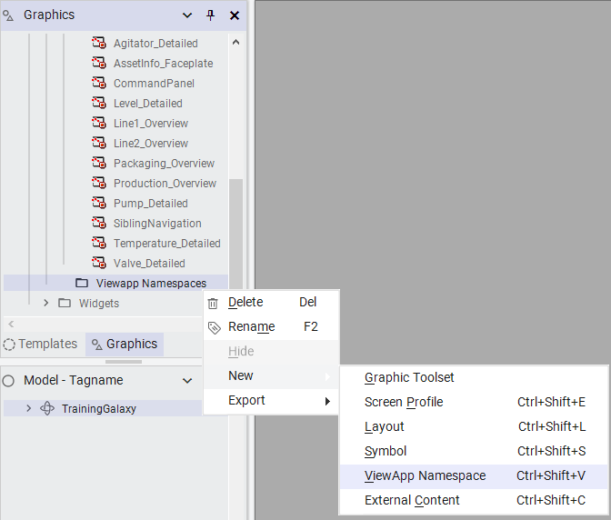
Step 3: Rename the new ViewApp namespace to Sources.
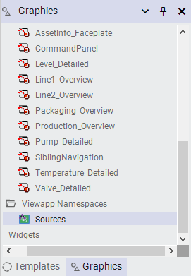
Step 4: Double-click Sources to open it in the ViewApp Namespace Editor.
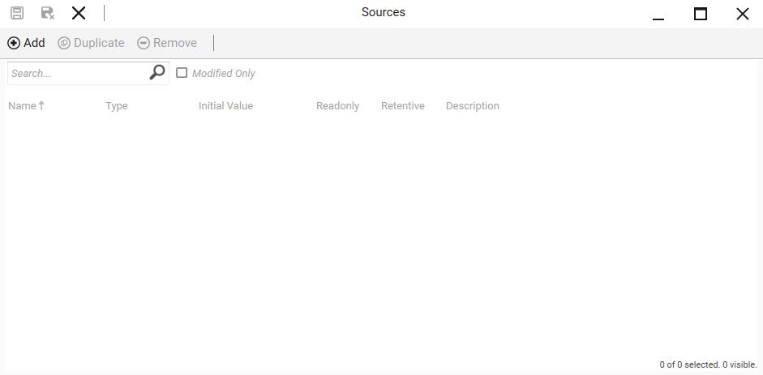
Step 5: Click Add to add a new ViewApp attribute. A new attribute with the default name is added to the list.
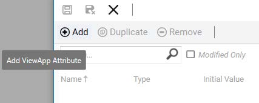
Step 6: Rename the custom attribute to URL1.
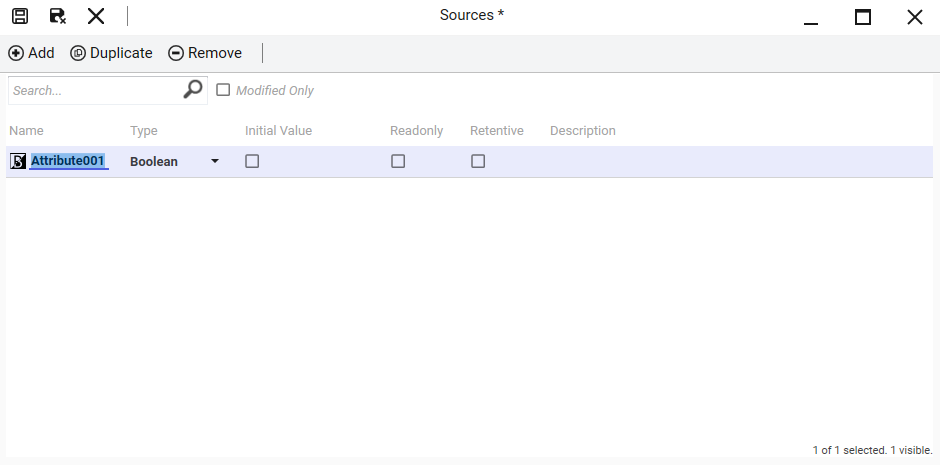
Step 7: Configure URL1 as follows:
| Property | Value |
|---|---|
| Type | String |
| Initial Value | www.aveva.com |
| Readonly | unchecked (default) |
| Retentive | checked |
| Description | Provides the URL for the WebBrowser App |
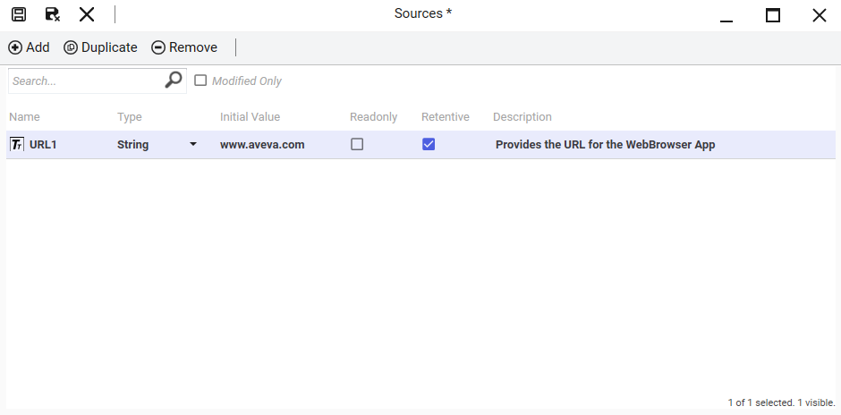
Step 8: Click Add to add another ViewApp attribute and name it HomeAddress.
Step 9: Configure HomeAddress as follows:
| Property | Value |
|---|---|
| Type | String |
| Initial Value | https://www.aveva.com |
| Readonly | checked |
| Retentive | unchecked (default) |
| Description | Stores the home address |
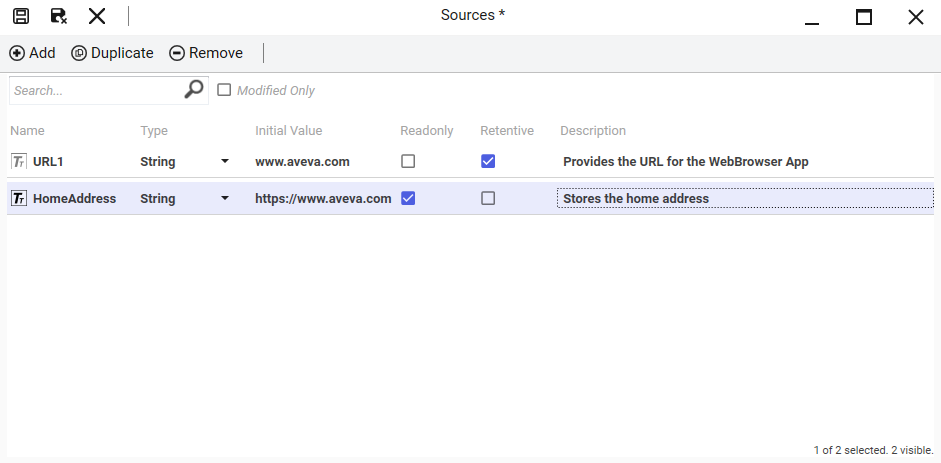
Step 10: With HomeAddress selected, click Duplicate to create a copy.
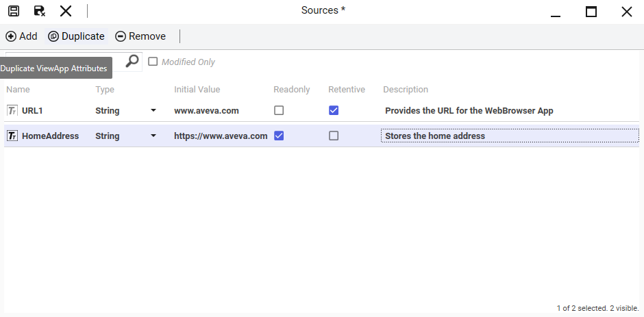
Step 11: Name the duplicate File_HTML, and update its Initial Value and Description:
| Property | Value |
|---|---|
| Initial Value | C:\Training\Other Files\ViewApp_Namespaces.html |
| Description | Stores the HTML file source |
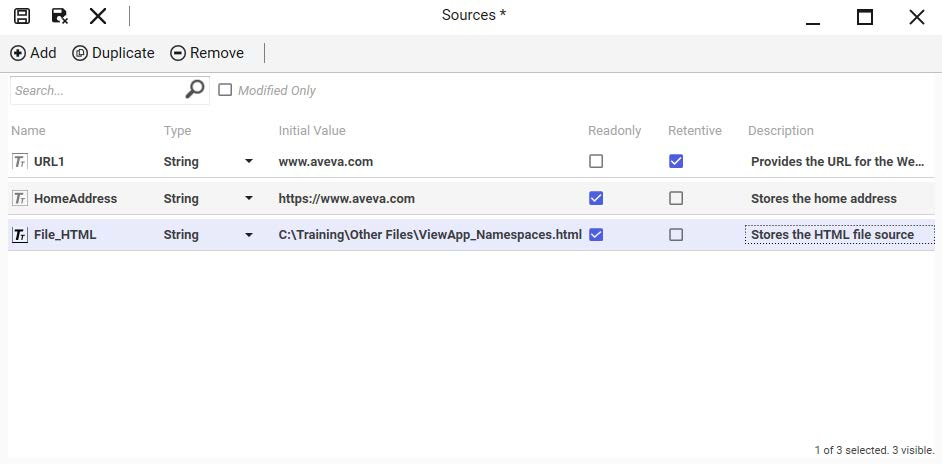
Step 12: Save and close the Sources ViewApp namespace, and check it in.
Step 13: On the Graphics tab, in the Training \ Symbols toolset, create a new symbol and name it BrowserURLEntry.
Step 14: Double-click BrowserURLEntry to open it in the Graphic Editor.
Step 15: Draw a button on the drawing canvas and enter Homepage for the text. The button is auto-named Button1. In this example, the width is 90 pixels and the height is 40 pixels.
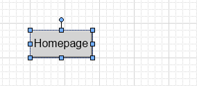
Step 16: Double-click Button1 to open the Edit Animations dialog box and add a Pushbutton animation.
Step 17: Configure the Pushbutton animation as follows:
| Property | Value |
|---|---|
| States | String |
| Reference (String) | MyViewApp.Sources.URL1 |
| Action | Set |
| Values \ Value1 | MyViewApp.Sources.HomeAddress (use Expression or Reference mode) |
| Send Value | On button release (checked) |
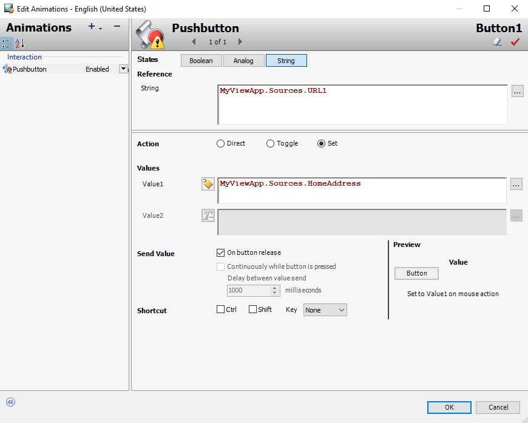
Step 18: Click OK to close the Edit Animations dialog box.
Step 19: Duplicate Button1 and move the duplicate to the right of Button1. The name of the new button is Button2.
Step 20: Change the text on Button2 to HTML.
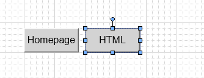
Step 21: Double-click Button2 to open the Edit Animations dialog box.
Step 22: Change Value1 to MyViewApp.Sources.File_HTML.
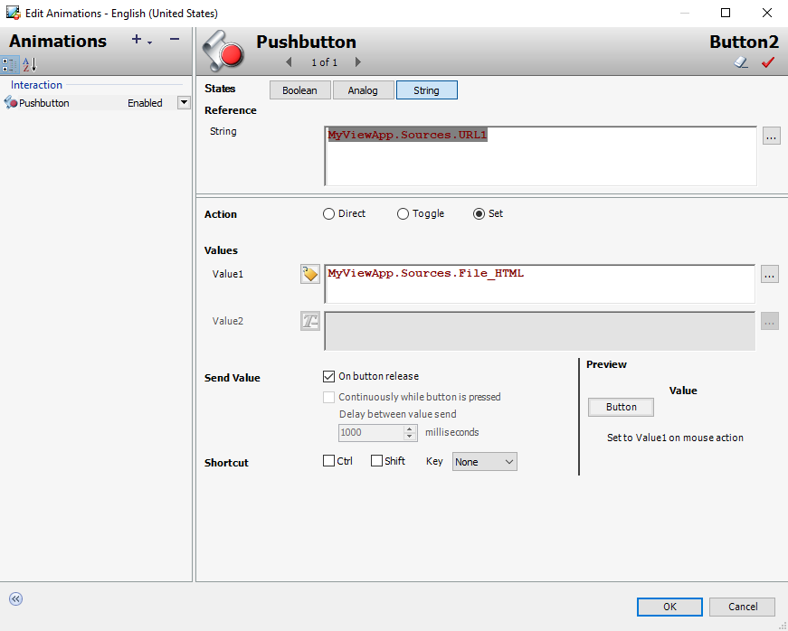
Step 23: Click OK to close the Edit Animations dialog box.
Step 24: In the Tools pane, select the Text Box tool.
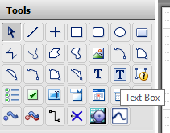
Step 25: Draw a text box to the right of the HTML button, with the top aligned with the tops of the buttons. The text box is named TextBox1 (width: 1200 pixels, height: 40 pixels).
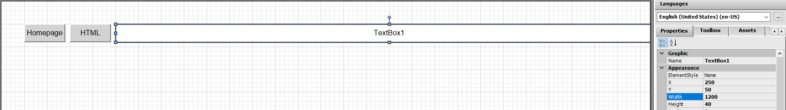
Step 26: With TextBox1 selected, on the Properties tab, configure properties:
| Property | Value |
|---|---|
| Appearance / Text | URL |
| TextStyle / Alignment | MiddleLeft |
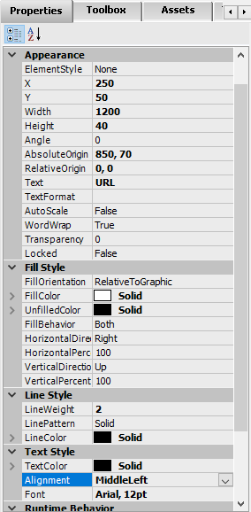
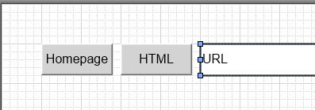
Step 27: Double-click TextBox1 and add a User Input animation.
MyViewApp.Sources.URL1), which other symbols and Apps then read — enabling dynamic user-driven navigation to different web pages.
Step 28: Configure the animation:
| Property | Value |
|---|---|
| States | String |
| Reference (String) | MyViewApp.Sources.URL1 |
| Message to User | Enter a valid URL to browse |
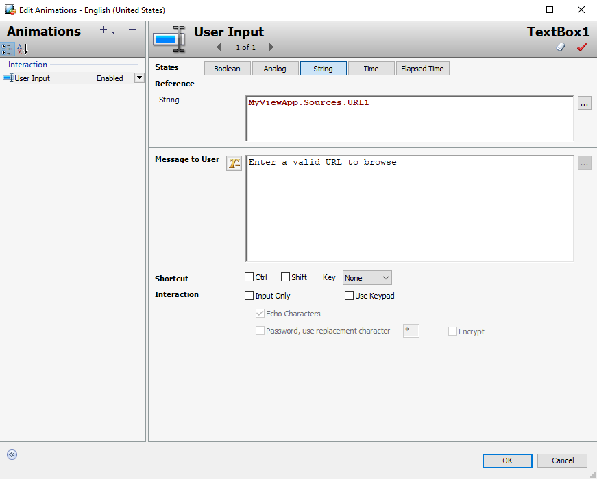
Step 29: Click OK to close the Edit Animations dialog box.
Step 30: Save and close the BrowserURLEntry symbol, and check it in.
Step 31: On the Graphics tab, in the Training \ Layouts toolset, create a new layout and name it WebBrowser_withURL.
Step 32: Double-click WebBrowser_withURL to open it in the Layout Editor.
Step 33: Select Pane1 and click the Add new pane up-arrow to add a new pane at the top. A new pane named Pane2 is added above Pane1.
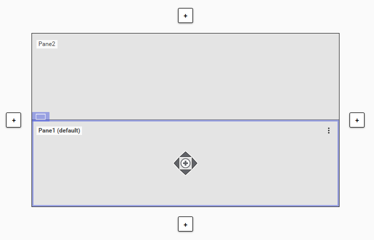
Step 34: Select Pane2 and on the Properties tab, configure it as follows:
| Property | Value |
|---|---|
| Size \ Height | 40 |
| Size \ Height Sizing | Fixed |
| Appearance \ Content Alignment | Left |
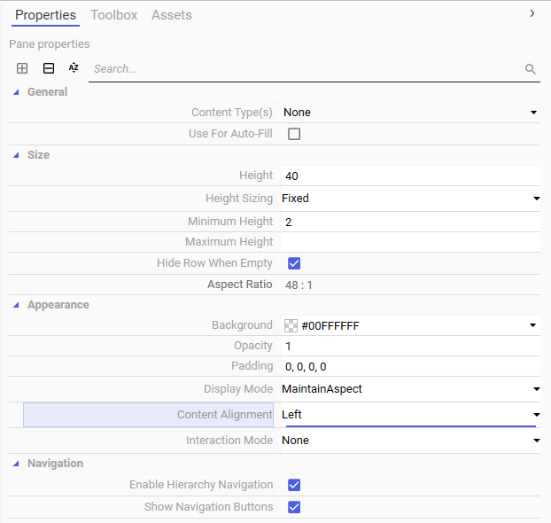
Step 35: On the Toolbox tab, enter a search string to find BrowserURLEntry.
Step 36: Drag BrowserURLEntry to Pane2. Because Pane2 is small, you may want to zoom the preview display to make it easier to assign content to it.
Step 37: On the Toolbox tab, enter a search string to find WebBrowser and select it.
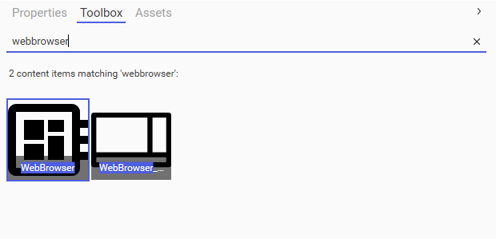
Step 38: Drag WebBrowser to Pane1.
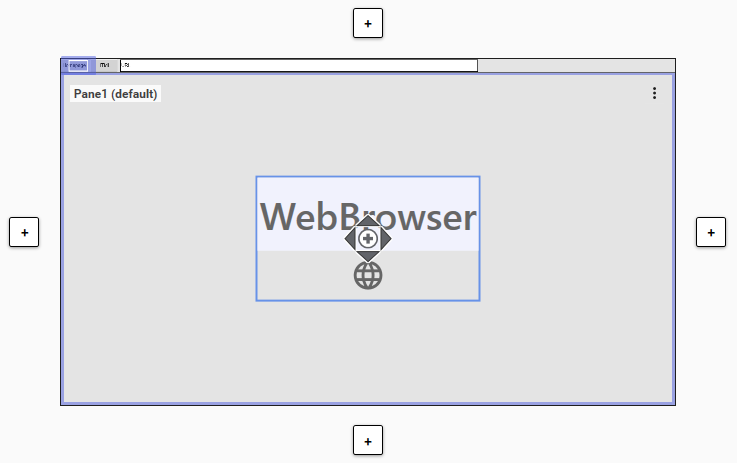
Step 39: With Pane1 selected, on the Properties tab for the Browser \\ Address property, click the down-arrow to the left of the field. A drop-down list appears.
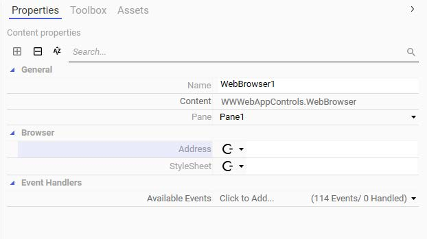
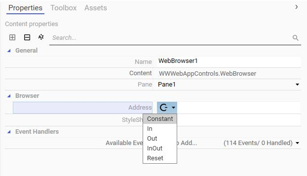
Step 40: From the drop-down list, select In. This changes the binding mode to Dynamic. The binding mode icon changes to a left-pointing arrow, indicating In-only binding — the property will be overridden by the specified expression or reference.
Step 41: Enter the following for the Browser \ Address property reference: MyViewApp.Sources.URL1
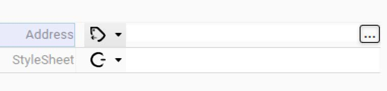
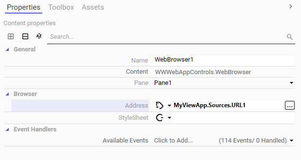
Step 42: Save and close the WebBrowser_withURL layout, and check it in.
Step 43: Switch to the ViewApp Editor.
Step 44: With Home selected in the Navigation list, add a new navigation item and name it WebBrowser.
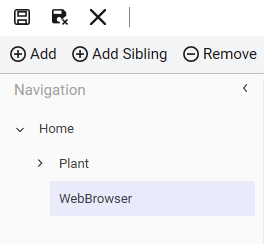
Step 45: With the WebBrowser navigation item selected, on the Toolbox tab, enter a search string to find WebBrowser_withURL and select it.
Step 46: Drag WebBrowser_withURL to Pane1. The layout is now assigned to the WebBrowser navigation item.
Step 47: Click Update to save the changes to the ViewApp and update the preview session.
The preview session opens, navigated to WebBrowser. The BrowserURLEntry symbol is shown at the top with the Homepage and HTML buttons and a URL text box. Below it, the WebBrowser App displays the AVEVA website loaded from the URL attribute.
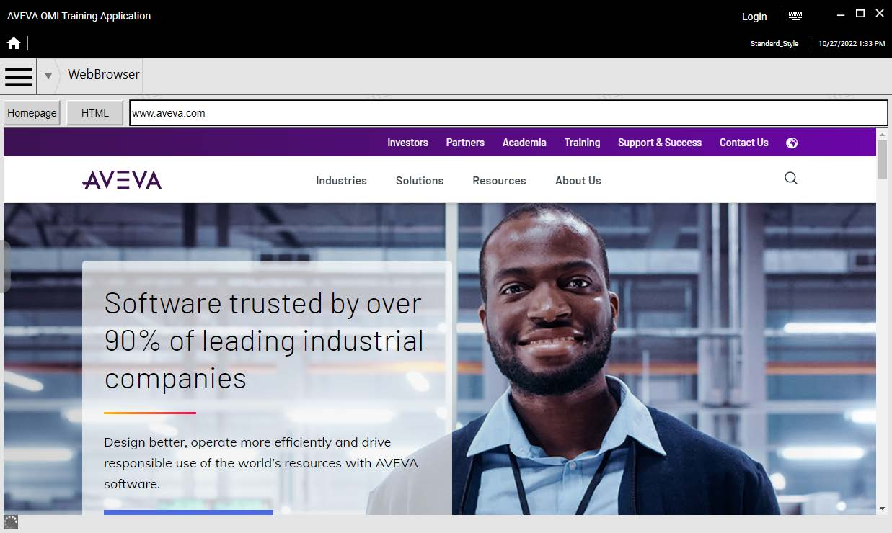
Step 48: Click the Homepage and HTML buttons and notice the behavior.
Step 49: Enter a valid URL into the text box and notice the behavior.
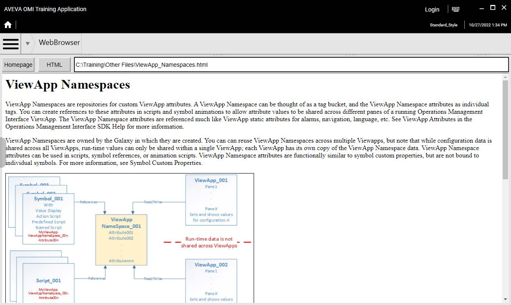
Step 50: When you are finished testing, close the preview session.
Step 51: From the ViewApp Editor, close the ViewApp and check it in.
<End of Lab>
Changing the binding to "In" (Dynamic) allows the WebBrowser to read the URL from the ViewApp namespace attribute at runtime. This means when buttons or the text box update the URL1 attribute, the WebBrowser automatically navigates to the new URL.
URL1 (String, initial value "www.aveva.com", Retentive) — the current URL displayed by the browser; HomeAddress (String, "https://www.aveva.com", Readonly) — the homepage address; File_HTML (String, file path, Readonly) — the local HTML file source.
The User Input animation allows the operator to type a URL into the text box at runtime. It writes the entered value to MyViewApp.Sources.URL1, which the WebBrowser App reads via its In-binding, enabling dynamic web navigation.
The next lab (Lab 16) covers ViewApp security configuration. All objects must be closed and checked in so that the Galaxy is in a clean, committed state before security settings are applied.